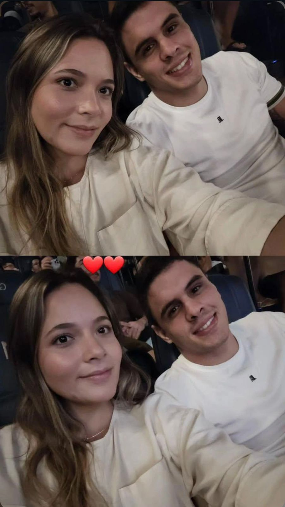
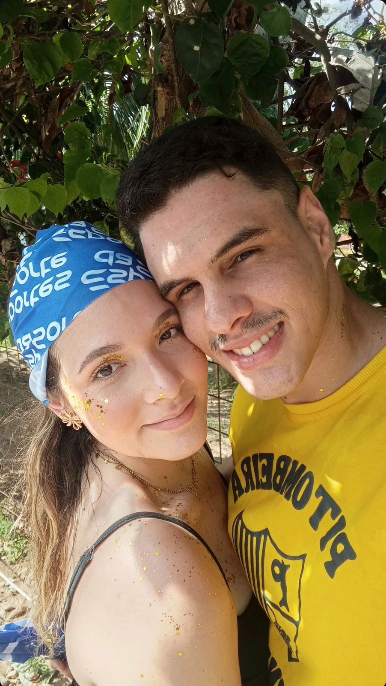
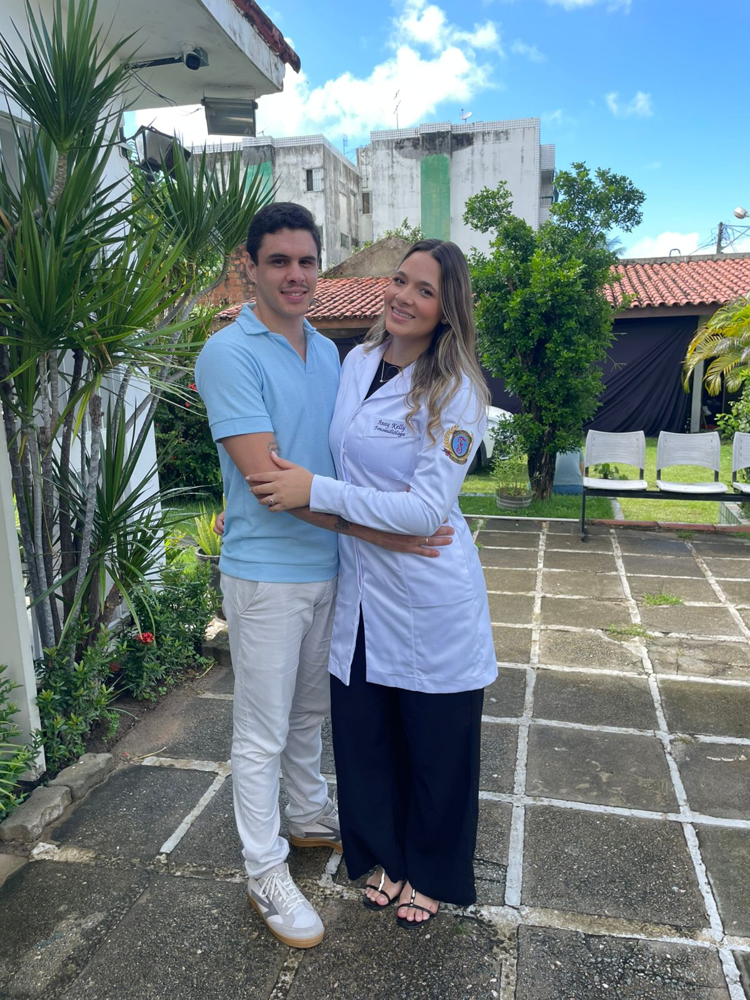

N

Há exatos 8 meses, nossa história deu o primeiro play...

...e no meio do nosso próprio carnaval, eu encontrei o meu lugar.

Eu vi você brilhar, conquistar seus sonhos e se tornar uma fonoaudióloga incrível.